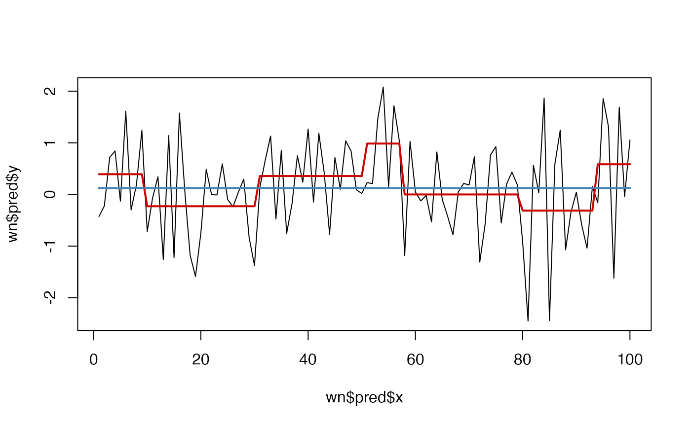

Use recursive partitioning function rpart::rpart() to perform a 'classification' of relatively stable levels in a timeseries.
A time series of numeric vector
An integer indicating how many datapoints should be in a segment before it will be analysed for presence of a level change (default = 12)
Minimum duration (number of datapoint) of a level (default = round(minDataSplit/3))
A number indicating a criterion of change that must occur before declaring a new level. Higher numbers indicate higher levels of change must occur before a new level is considered. For example, if method = "anova", the overall R^2 after a level is introduced must increase by the value of changeSensitivity, see the cp parameter in rpart::rpart.control(). (default = 0.01)
Maximum number of levels in one series (default = 30)
The partitioning method to use, see the manual pages of rpart for details.
After the call to rpart, adjust detected level changes to a minimum absolute change in y. If a level change is smaller than minChange, the previous level will be continued. Note that this is an iterative process starting at the beginning of the series and 'correcting' towards the end (default = sd(y, na.rm = TRUE))
Should a plot with the original series and the levels be produced? (default = FALSE)
Should a plot of the decision tree be produced. This requires package partykit (default = FALSE)
A list object with fields tree and pred. The latter is a data frame with columns x (time), y (the variable of interest) and p the predicted levels in y and p_adj, the levels in p but adjusted for the value passed to minChange.
Other Time series operations:
ts_center(),
ts_changeindex(),
ts_checkfix(),
ts_detrend(),
ts_diff(),
ts_discrete(),
ts_duration(),
ts_embed(),
ts_integrate(),
ts_peaks(),
ts_permtest_block(),
ts_permtest_transmat(),
ts_rasterize(),
ts_sd(),
ts_slice(),
ts_standardise(),
ts_sumorder(),
ts_symbolic(),
ts_trimfill(),
ts_windower()
# Levels in white noise?
set.seed(4321)
y <- rnorm(100)
wn <- ts_levels(y)
plot(wn$pred$x,wn$pred$y, type = "l")
lines(wn$pred$p, col = "red3", lwd = 2)
# This is due to the default changeSensitivity of 0.01
wn2 <- ts_levels(y,changeSensitivity = .1)
#> Warning: The largest level difference is smaller than the value of argument minChange. Setting minChange to NA
lines(wn2$pred$p, col = "steelblue", lwd = 2)
